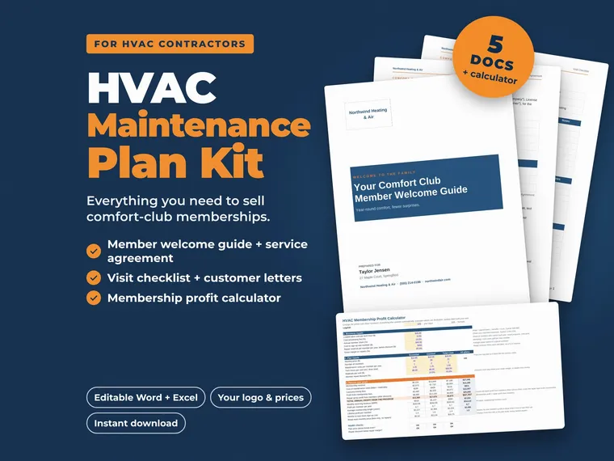

For HVAC contractors
HVAC maintenance agreement template: what to include (and a tune-up checklist)
A maintenance agreement turns one-off tune-ups into a membership: predictable revenue for you, priority service and savings for the homeowner. Here is what a solid agreement covers, the checklist your techs should follow, and a simple way to price your plans.

The 10 sections every HVAC maintenance agreement needs
- Parties and service address. Your company name, license number and contact details; the customer's name and the address of the equipment covered.
- Plan and tier. The plan name (for example a "Comfort Club") and which tier the customer chose. Most contractors offer three tiers.
- Services included. Exactly what happens at each visit: cooling tune-up in spring, heating tune-up in fall, electrical and airflow checks, thermostat calibration and a written report.
- Scheduling. How visits are booked, the arrival window, and what happens if the customer misses a visit.
- Price and billing. Monthly or annual price, payment method, and what happens when a payment fails.
- Term, renewal and cancellation. The length of the agreement, whether it renews automatically, and the notice period to cancel (30 days is common). Many states regulate automatic renewal, so state it plainly.
- Member benefits. Repair discounts by tier, priority scheduling, waived diagnostic or after-hours fees, discounts on a second system.
- Exclusions. Parts, refrigerant and replacement equipment; ductwork cleaning or modification; damage from power surges, flooding, pests or work by others; hazardous material removal; equipment that is unsafe to service.
- Warranty and liability. Your workmanship warranty, the fact that parts carry the manufacturer's warranty, and a limit of liability.
- Governing law and signatures. The state whose law applies, then signatures and dates from both sides.
Not legal advice. Rules on contracts and automatic renewal vary by state. Use a template as your starting point and have a local attorney review your final agreement.
Sample tier structure
| Benefit | Essential | Comfort | Total Care |
|---|---|---|---|
| Precision tune-ups per year | 1 | 2 (spring + fall) | 2 (spring + fall) |
| Priority scheduling | – | Yes | Front of the line |
| Repair discount | – | 10% | 15% |
| Diagnostic fee waived | – | Yes | Yes |
| No overtime or weekend fees | – | – | Yes |
| Filters delivered | – | – | Yes |
| Example monthly price | $12.95 | $18.95 | $29.95 |
Example prices only. Set yours from your own costs (next section).
How to price your maintenance plans
- Cost of the visits. Technician hours per visit × your loaded labor rate (wage plus taxes, insurance, truck), plus drive time and materials. Multiply by visits per year.
- Cost of the perks. Estimate the repair discounts and waived fees you will give a typical member in a year.
- Add your margin. The plan should pay for itself before counting any repair work it brings in.
- Divide by 12. A monthly price feels smaller to homeowners and smooths your cash flow.
Then check the real prize: members call you first when something breaks, and they are the customers most likely to buy a replacement system from you.
20-point HVAC tune-up checklist
Cooling / heat pump (spring)
- Inspect and clean outdoor condenser coil
- Check refrigerant pressures (superheat / subcool)
- Test run and start capacitors (record µF)
- Inspect contactor for pitting
- Measure compressor and condenser fan amp draw
- Clear condensate drain; check pan and float switch
- Inspect evaporator coil where accessible
- Check outdoor unit is level with 2 ft clearance
Heating / furnace (fall)
- Inspect heat exchanger for cracks or corrosion
- Test igniter and clean flame sensor
- Check gas pressure (inlet / manifold)
- Inspect flue, venting and draft
- Test limit, rollout and pressure switches
- Carbon monoxide test (appliance + ambient)
Airflow and controls (every visit)
- Inspect or replace air filter
- Inspect blower wheel and motor
- Measure total external static pressure
- Tighten electrical connections
- Test and calibrate thermostat
- Inspect visible ductwork and connections
Record readings on every visit (supply and return temperature, temperature split, suction and liquid pressure, static pressure, compressor amps, capacitor µF, ambient CO) and give the homeowner a written report. Many equipment manufacturers ask for proof of regular professional maintenance to keep the warranty valid, so the report is worth keeping.
Get the whole kit, ready to edit
The HVAC Maintenance Plan Kit has everything on this page as editable files: the maintenance agreement (Word), a branded client welcome packet, the visit checklist, customer reminder letters and a membership profit calculator (Excel). Replace the placeholders like [COMPANY NAME] with Find & Replace and print.
Also doing plumbing? The HVAC and Plumbing bundle includes both kits.
Questions
What should an HVAC maintenance agreement include?
Parties and address, plan and tier, services per visit, scheduling, price and billing, renewal and cancellation, member benefits, exclusions, warranty and liability, governing law and signatures.
How many visits per year?
Two for most residential plans: cooling in spring, heating in fall. An entry tier with one visit a year is common.
Should the agreement renew automatically?
Auto-renewal keeps members, but state it clearly with the cancellation notice period, and check your state's automatic-renewal rules.
Launch your maintenance membership this week
Editable Word and Excel files, instant download.